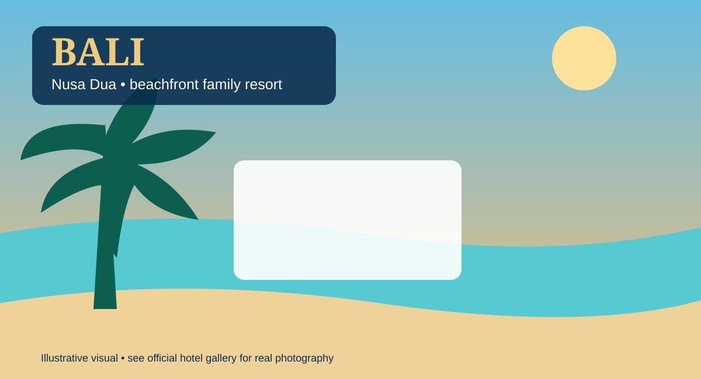
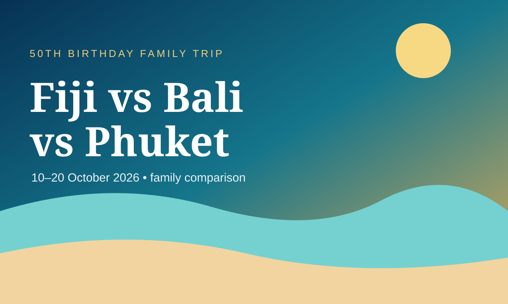
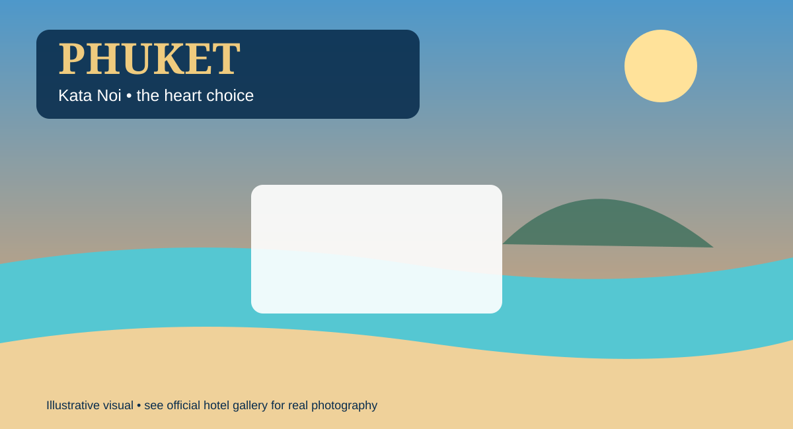

#1 • balanced winnerExplore Bali
Bali 🇮🇩
9.6 / 10
Best overall blend of weather, resort quality, direct flights and cost.
HotelA$3,944
SYD flight6h30 direct
WeatherExcellent
ChildcareVery strong

Built around our actual family: two adults, a 3-year-old and 7-month-old from Sydney, plus Mum from Melbourne. Direct flights, reliable beach weather, childcare and a genuinely special birthday matter more than headline price alone.
Bali currently has the fewest compromises. Fiji is the easiest and strongest for childcare, but the live Outrigger quote is extremely high. Phuket is the most exciting “heart” option, but October weather and the Sydney return routing are weaker.

Best overall blend of weather, resort quality, direct flights and cost.

Best infant/toddler childcare and simplest travel, but currently very expensive.

Beautiful resort holiday and strong kid facilities, with more weather and flight risk.
2 rooms • 10 nights • 3 adults + 3yo + infant • Booking.com 8.7/10 from 1,414 reviews
Beachfront in Nusa Dua/Tanjung Benoa and the strongest live value of the three finalists.
How it matches us: the 3-year-old gets the pools, playground and beach; the baby has cot/nanny support; and booked nanny time solves the under-4 kids-club restriction when we want a birthday dinner or spa time.
Live hotel price ↗Official hotel ↗Real hotel photos ↗2 rooms • 10 nights • Booking.com 8.4/10 from 818 reviews
How it matches us: this is the cleanest childcare setup found anywhere. Both kids are directly inside the published age ranges, which could give us genuine parent time without improvising.
The issue: at today’s live room rate, Outrigger is over A$12k more than the Bali hotel before packages/promotions. I would only choose it after checking a direct resort package or a second Fiji hotel.
Live hotel price ↗Official hotel ↗Real hotel photos ↗Nanny details ↗2 rooms • 10 nights • Booking.com 8.7/10 from 1,760 reviews
How it matches us: this is probably the resort we would be most excited about. The child facilities are excellent and the setting feels special enough for the 50th.
Live hotel price ↗Official hotel ↗Real hotel photos ↗My decision rule: if Fiji drops dramatically through a direct package, reconsider it. Otherwise Bali is the rational winner. If we decide the trip should be more about excitement than certainty, Phuket becomes the emotional pick.
All hotel, weather and activity links above go to Booking.com or the official supplier. Embedded resort graphics are illustrations, not photographs of the actual hotel. Use the official gallery button before booking.
Holiday Inn Bali official galleryOutrigger Fiji official galleryKatathani official galleryFlight displays were returned in GBP and converted using £1 = A$1.88901 from the live rate retrieved on 29 Aug 2026. Final airline checkout overrides these estimates.